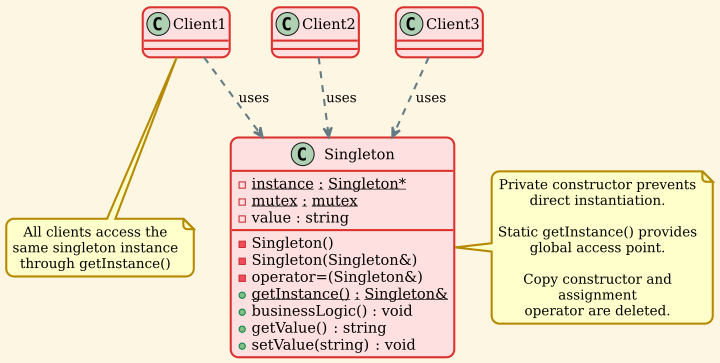

Singleton Pattern
Overview
Singleton is a creational design pattern that ensures a class has only one instance and provides a global point of access to that instance. The pattern restricts the instantiation of a class to a single object and provides a way to access that object from anywhere in the application.
Intent
The Singleton pattern ensures that a class has just a single instance and provides a global access point to that instance. It's used when you need exactly one object to coordinate actions across the system.
Problem
Sometimes we need to ensure that a class has exactly one instance. For example:
- A single database connection pool shared by different parts of a program
- A single configuration manager that maintains application settings
- A single logger that writes to a file
- A single thread pool or cache manager
The usual approach of using a global variable doesn't enforce that there's only one instance. Anyone can create more instances. Moreover, you can't lazy-load a global variable—it's always created when the program starts, even if you never use it.
Solution
The Singleton pattern solves both of these problems:
-
Ensure a class has just a single instance: The pattern makes the constructor private, preventing other objects from using the new operator with the Singleton class. The class itself is responsible for keeping track of its sole instance.
-
Provide a global access point to that instance: The pattern provides a static method that returns the reference to the instance, creating it on the first call (lazy initialization) and returning the existing instance on subsequent calls.
Structure
UML Diagram

Participants
-
Singleton
- Declares a static method
getInstance() that returns the same instance of its own class
- Defines a private constructor to prevent direct instantiation
- Declares copy constructor and assignment operator as deleted (or private)
- May include business logic methods
-
Client
- Accesses the Singleton instance exclusively through the
getInstance() method
- Cannot create new instances directly
Implementation
Classic Singleton (Meyer's Singleton - C++11)
This is the recommended approach in modern C++. It's thread-safe due to C++11's guarantee of thread-safe initialization of local static variables.
| // Singleton.h
#ifndef SINGLETON_H
#define SINGLETON_H
#include <string>
#include <iostream>
/**
* @brief Classic Singleton - Thread-safe using Meyer's Singleton
*
* The Singleton class defines the `getInstance` method that serves as an
* alternative to constructor and lets clients access the same instance of
* this class over and over.
*/
class Singleton {
private:
/**
* @brief Private constructor prevents direct instantiation
*/
Singleton(const std::string& value) : value_(value) {
std::cout << "Singleton instance created with value: " << value_ << std::endl;
}
/**
* @brief Delete copy constructor - Singletons should not be cloneable
*/
Singleton(const Singleton&) = delete;
/**
* @brief Delete assignment operator - Singletons should not be assignable
*/
Singleton& operator=(const Singleton&) = delete;
std::string value_;
public:
/**
* @brief Static method that controls access to the singleton instance.
*
* This implementation is thread-safe in C++11 and later because the
* initialization of local static variables is guaranteed to be thread-safe.
*/
static Singleton& getInstance(const std::string& value = "default") {
static Singleton instance(value);
return instance;
}
/**
* @brief Example business logic method
*/
void businessLogic() const {
std::cout << "Executing business logic with value: " << value_ << std::endl;
}
std::string getValue() const {
return value_;
}
void setValue(const std::string& value) {
value_ = value;
}
};
#endif // SINGLETON_H
|
Thread-Safe Singleton with Explicit Locking
This demonstrates explicit thread-safety using mutex and double-checked locking pattern.
| /**
* @brief Thread-safe Singleton with explicit locking
*
* This demonstrates a more explicit thread-safe implementation using mutex.
*/
class ThreadSafeSingleton {
private:
static ThreadSafeSingleton* instance_;
static std::mutex mutex_;
std::string value_;
ThreadSafeSingleton(const std::string& value) : value_(value) {
std::cout << "ThreadSafeSingleton instance created" << std::endl;
}
ThreadSafeSingleton(const ThreadSafeSingleton&) = delete;
ThreadSafeSingleton& operator=(const ThreadSafeSingleton&) = delete;
public:
~ThreadSafeSingleton() {
std::cout << "ThreadSafeSingleton instance destroyed" << std::endl;
}
/**
* @brief Thread-safe getInstance with double-checked locking
*
* This implementation uses double-checked locking pattern to minimize
* the overhead of acquiring a lock.
*/
static ThreadSafeSingleton* getInstance(const std::string& value = "default") {
// First check (without locking)
if (instance_ == nullptr) {
std::lock_guard<std::mutex> lock(mutex_);
// Second check (with locking)
if (instance_ == nullptr) {
instance_ = new ThreadSafeSingleton(value);
}
}
return instance_;
}
/**
* @brief Cleanup method to destroy the singleton instance
*/
static void destroyInstance() {
std::lock_guard<std::mutex> lock(mutex_);
if (instance_ != nullptr) {
delete instance_;
instance_ = nullptr;
}
}
void businessLogic() const {
std::cout << "ThreadSafeSingleton executing logic" << std::endl;
}
std::string getValue() const {
return value_;
}
};
// Initialize static members
ThreadSafeSingleton* ThreadSafeSingleton::instance_ = nullptr;
std::mutex ThreadSafeSingleton::mutex_;
|
Smart Pointer Singleton
Modern C++ approach using std::unique_ptr for automatic memory management.
| /**
* @brief Singleton with lazy initialization using smart pointer
*/
class SmartSingleton {
private:
static std::unique_ptr<SmartSingleton> instance_;
static std::mutex mutex_;
std::string value_;
SmartSingleton(const std::string& value) : value_(value) {
std::cout << "SmartSingleton instance created" << std::endl;
}
SmartSingleton(const SmartSingleton&) = delete;
SmartSingleton& operator=(const SmartSingleton&) = delete;
public:
~SmartSingleton() {
std::cout << "SmartSingleton instance destroyed" << std::endl;
}
/**
* @brief Get singleton instance using smart pointer
*/
static SmartSingleton& getInstance(const std::string& value = "default") {
if (!instance_) {
std::lock_guard<std::mutex> lock(mutex_);
if (!instance_) {
instance_.reset(new SmartSingleton(value));
}
}
return *instance_;
}
void businessLogic() const {
std::cout << "SmartSingleton executing logic" << std::endl;
}
};
// Initialize static members
std::unique_ptr<SmartSingleton> SmartSingleton::instance_ = nullptr;
std::mutex SmartSingleton::mutex_;
|
Demo Application
| // singleton_demo.cpp
#include "Singleton.h"
#include <thread>
#include <vector>
/**
* @brief Demonstrates basic singleton usage
*/
void demonstrateBasicSingleton() {
std::cout << "=== Basic Singleton ===" << std::endl;
// First access - creates the instance
Singleton& s1 = Singleton::getInstance("First Value");
std::cout << "First instance value: " << s1.getValue() << std::endl;
// Second access - returns the same instance
Singleton& s2 = Singleton::getInstance("Second Value");
std::cout << "Second instance value: " << s2.getValue() << std::endl;
// Verify they are the same instance
std::cout << "Are s1 and s2 the same? "
<< ((&s1 == &s2) ? "Yes" : "No") << std::endl;
// Modify through one reference
s1.setValue("Modified Value");
std::cout << "After modifying s1, s2 value: " << s2.getValue() << std::endl;
}
/**
* @brief Thread function for testing thread-safety
*/
void threadFunction(const std::string& threadName) {
Singleton& singleton = Singleton::getInstance(threadName);
std::cout << threadName << " - Value: " << singleton.getValue() << std::endl;
}
/**
* @brief Demonstrates thread-safe singleton access
*/
void demonstrateThreadSafety() {
std::cout << "\n=== Thread-Safe Singleton ===" << std::endl;
std::vector<std::thread> threads;
// Create multiple threads trying to access singleton simultaneously
for (int i = 0; i < 5; ++i) {
threads.emplace_back(threadFunction, "Thread-" + std::to_string(i));
}
// Wait for all threads to complete
for (auto& thread : threads) {
thread.join();
}
}
int main() {
std::cout << "=== Singleton Pattern Demo ===\n" << std::endl;
demonstrateBasicSingleton();
demonstrateThreadSafety();
std::cout << "\n=== Demo Complete ===" << std::endl;
return 0;
}
|
Output:
| === Singleton Pattern Demo ===
=== Basic Singleton (Meyer's Singleton) ===
Singleton instance created with value: First Value
First instance value: First Value
Second instance value: First Value
Are s1 and s2 the same instance? Yes
After modifying s1, s2 value: Modified Value
Executing business logic with value: Modified Value
=== Thread-Safe Singleton ===
Thread-1 - Singleton value: Modified Value
Thread-0 - Singleton value: Modified Value
Thread-2 - Singleton value: Modified Value
Thread-4 - Singleton value: Modified Value
Thread-3 - Singleton value: Modified Value
All threads completed. Singleton remains consistent.
=== Demo Complete ===
|
The output demonstrates that:
1. The singleton instance is created only once ("Singleton instance created" appears once)
2. Multiple references point to the same instance
3. All threads access the same singleton instance safely
Key Concepts
Lazy Initialization
The singleton instance is created only when it's first needed:
| static Singleton& getInstance() {
static Singleton instance; // Created on first call only
return instance;
}
|
Eager Initialization
Alternative approach where the instance is created at program startup:
| class EagerSingleton {
private:
static EagerSingleton instance; // Created at program start
EagerSingleton() {}
public:
static EagerSingleton& getInstance() {
return instance;
}
};
EagerSingleton EagerSingleton::instance;
|
Thread Safety
Meyer's Singleton (C++11+): Thread-safe by default
| static Singleton& getInstance() {
static Singleton instance; // Thread-safe in C++11+
return instance;
}
|
Double-Checked Locking: Minimizes lock overhead
| if (instance_ == nullptr) { // First check (fast path)
std::lock_guard<std::mutex> lock(mutex_);
if (instance_ == nullptr) { // Second check (with lock)
instance_ = new Singleton();
}
}
|
Preventing Copies
Prevent cloning and assignment:
| class Singleton {
private:
Singleton(const Singleton&) = delete; // No copy
Singleton& operator=(const Singleton&) = delete; // No assignment
Singleton(Singleton&&) = delete; // No move
Singleton& operator=(Singleton&&) = delete; // No move assignment
};
|
Applicability
Use the Singleton pattern when:
1. Single Instance Requirement
A class must have exactly one instance available to all clients.
Example: Database connection pool, configuration manager, logger.
2. Global Access Point
The single instance needs to be accessible from multiple points in the application.
Example: Application-wide settings, resource manager.
3. Lazy Initialization
The instance should be created only when it's first needed to save resources.
Example: Heavy resource objects like database connections.
4. Controlled Access to Shared Resources
You need to control access to a shared resource like a file or socket.
Example: Print spooler, file system manager.
5. State Management
You need to maintain state that's shared across the application.
Example: User session, application state.
Advantages
1. Single Instance Guarantee
✅ Ensures that a class has only one instance.
2. Global Access Point
✅ Provides a well-defined access point to that instance.
3. Lazy Initialization
✅ The singleton instance is created only when it's needed.
4. Control Over Instantiation
✅ The singleton class controls how and when its instance is created.
5. Reduced Namespace Pollution
✅ Better than global variables—provides a namespace and better control.
6. Permit Refinement
✅ Can be subclassed, and applications can use an extended version.
Disadvantages
1. Global State
❌ Introduces global state into an application, which can make testing difficult.
2. Violates Single Responsibility Principle
❌ The pattern solves two problems at once (single instance + global access).
3. Testing Challenges
❌ Difficult to mock or replace with test doubles in unit tests.
4. Concurrency Issues
❌ Requires careful attention to thread safety in multi-threaded environments.
5. Hidden Dependencies
❌ Makes dependencies less explicit—it's not clear from a class interface that it uses a singleton.
6. Lifetime Management
❌ Destruction order can be problematic, especially with interdependent singletons.
Real-World Examples
Example 1: Configuration Manager
| class ConfigurationManager {
private:
std::unordered_map<std::string, std::string> settings_;
ConfigurationManager() {
// Load configuration from file
loadConfiguration();
}
ConfigurationManager(const ConfigurationManager&) = delete;
ConfigurationManager& operator=(const ConfigurationManager&) = delete;
void loadConfiguration() {
// Load from config file
settings_["database_url"] = "localhost:5432";
settings_["api_key"] = "secret_key_123";
settings_["debug_mode"] = "true";
}
public:
static ConfigurationManager& getInstance() {
static ConfigurationManager instance;
return instance;
}
std::string getSetting(const std::string& key) const {
auto it = settings_.find(key);
return (it != settings_.end()) ? it->second : "";
}
void setSetting(const std::string& key, const std::string& value) {
settings_[key] = value;
}
bool getBool(const std::string& key) const {
return getSetting(key) == "true";
}
};
// Usage
auto& config = ConfigurationManager::getInstance();
std::string dbUrl = config.getSetting("database_url");
bool debugMode = config.getBool("debug_mode");
|
Example 2: Logger
| class Logger {
private:
std::ofstream logFile_;
std::mutex mutex_;
std::string logLevel_;
Logger() : logLevel_("INFO") {
logFile_.open("application.log", std::ios::app);
}
Logger(const Logger&) = delete;
Logger& operator=(const Logger&) = delete;
public:
~Logger() {
if (logFile_.is_open()) {
logFile_.close();
}
}
static Logger& getInstance() {
static Logger instance;
return instance;
}
void setLogLevel(const std::string& level) {
logLevel_ = level;
}
void log(const std::string& level, const std::string& message) {
std::lock_guard<std::mutex> lock(mutex_);
auto now = std::chrono::system_clock::now();
auto time = std::chrono::system_clock::to_time_t(now);
logFile_ << "[" << std::ctime(&time) << "] "
<< "[" << level << "] "
<< message << std::endl;
}
void info(const std::string& message) {
log("INFO", message);
}
void error(const std::string& message) {
log("ERROR", message);
}
void debug(const std::string& message) {
if (logLevel_ == "DEBUG") {
log("DEBUG", message);
}
}
};
// Usage
Logger& logger = Logger::getInstance();
logger.info("Application started");
logger.error("Connection failed");
logger.debug("Variable value: " + std::to_string(42));
|
Example 3: Database Connection Pool
| class DatabaseConnectionPool {
private:
std::vector<std::unique_ptr<DatabaseConnection>> connections_;
std::queue<DatabaseConnection*> availableConnections_;
std::mutex mutex_;
const size_t poolSize_;
DatabaseConnectionPool() : poolSize_(10) {
// Initialize connection pool
for (size_t i = 0; i < poolSize_; ++i) {
auto conn = std::make_unique<DatabaseConnection>();
availableConnections_.push(conn.get());
connections_.push_back(std::move(conn));
}
}
DatabaseConnectionPool(const DatabaseConnectionPool&) = delete;
DatabaseConnectionPool& operator=(const DatabaseConnectionPool&) = delete;
public:
static DatabaseConnectionPool& getInstance() {
static DatabaseConnectionPool instance;
return instance;
}
DatabaseConnection* acquireConnection() {
std::lock_guard<std::mutex> lock(mutex_);
if (availableConnections_.empty()) {
throw std::runtime_error("No connections available");
}
DatabaseConnection* conn = availableConnections_.front();
availableConnections_.pop();
return conn;
}
void releaseConnection(DatabaseConnection* conn) {
std::lock_guard<std::mutex> lock(mutex_);
availableConnections_.push(conn);
}
size_t availableCount() const {
std::lock_guard<std::mutex> lock(mutex_);
return availableConnections_.size();
}
};
// Usage
auto& pool = DatabaseConnectionPool::getInstance();
DatabaseConnection* conn = pool.acquireConnection();
// Use connection
conn->executeQuery("SELECT * FROM users");
pool.releaseConnection(conn);
|
Example 4: Cache Manager
| class CacheManager {
private:
std::unordered_map<std::string, std::string> cache_;
std::mutex mutex_;
size_t maxSize_;
std::chrono::seconds ttl_;
std::unordered_map<std::string, std::chrono::steady_clock::time_point> timestamps_;
CacheManager() : maxSize_(1000), ttl_(300) {}
CacheManager(const CacheManager&) = delete;
CacheManager& operator=(const CacheManager&) = delete;
bool isExpired(const std::string& key) const {
auto it = timestamps_.find(key);
if (it == timestamps_.end()) return true;
auto now = std::chrono::steady_clock::now();
auto age = std::chrono::duration_cast<std::chrono::seconds>(now - it->second);
return age > ttl_;
}
public:
static CacheManager& getInstance() {
static CacheManager instance;
return instance;
}
void put(const std::string& key, const std::string& value) {
std::lock_guard<std::mutex> lock(mutex_);
if (cache_.size() >= maxSize_) {
// Simple eviction: remove oldest entry
auto oldest = timestamps_.begin();
cache_.erase(oldest->first);
timestamps_.erase(oldest);
}
cache_[key] = value;
timestamps_[key] = std::chrono::steady_clock::now();
}
std::string get(const std::string& key) {
std::lock_guard<std::mutex> lock(mutex_);
if (isExpired(key)) {
cache_.erase(key);
timestamps_.erase(key);
return "";
}
auto it = cache_.find(key);
return (it != cache_.end()) ? it->second : "";
}
void clear() {
std::lock_guard<std::mutex> lock(mutex_);
cache_.clear();
timestamps_.clear();
}
size_t size() const {
std::lock_guard<std::mutex> lock(mutex_);
return cache_.size();
}
};
// Usage
auto& cache = CacheManager::getInstance();
cache.put("user:123", "{\"name\":\"John\",\"age\":30}");
std::string userData = cache.get("user:123");
|
Example 5: Thread Pool
| class ThreadPool {
private:
std::vector<std::thread> workers_;
std::queue<std::function<void()>> tasks_;
std::mutex mutex_;
std::condition_variable condition_;
bool stop_;
ThreadPool(size_t threads = std::thread::hardware_concurrency()) : stop_(false) {
for (size_t i = 0; i < threads; ++i) {
workers_.emplace_back([this] {
while (true) {
std::function<void()> task;
{
std::unique_lock<std::mutex> lock(mutex_);
condition_.wait(lock, [this] {
return stop_ || !tasks_.empty();
});
if (stop_ && tasks_.empty()) return;
task = std::move(tasks_.front());
tasks_.pop();
}
task();
}
});
}
}
ThreadPool(const ThreadPool&) = delete;
ThreadPool& operator=(const ThreadPool&) = delete;
public:
~ThreadPool() {
{
std::unique_lock<std::mutex> lock(mutex_);
stop_ = true;
}
condition_.notify_all();
for (auto& worker : workers_) {
worker.join();
}
}
static ThreadPool& getInstance() {
static ThreadPool instance;
return instance;
}
template<typename F>
void enqueue(F&& f) {
{
std::unique_lock<std::mutex> lock(mutex_);
tasks_.emplace(std::forward<F>(f));
}
condition_.notify_one();
}
};
// Usage
auto& pool = ThreadPool::getInstance();
pool.enqueue([] {
std::cout << "Task executed in thread pool" << std::endl;
});
|
Abstract Factory
Relationship: Concrete factories are often implemented as Singletons.
Usage: A factory that creates objects of different types can be a Singleton to ensure consistent object creation across the application.
Facade
Relationship: Facade objects are often Singletons since only one facade object is required.
Usage: A facade providing a simplified interface to a subsystem can be implemented as a Singleton.
State
Relationship: State objects are often Singletons when the state is stateless.
Usage: Flyweight states that don't maintain any instance-specific data can be Singletons.
Flyweight
Relationship: Flyweight factory is often implemented as a Singleton.
Usage: The factory that manages flyweight objects is typically a Singleton.
Builder
Relationship: Builder can be a Singleton when you want to reuse the same builder instance.
Usage: Less common, but possible for stateless builders.
Common Mistakes
1. Not Thread-Safe in Multi-threaded Environments
❌ Wrong: Classic singleton without thread safety (pre-C++11 style).
| // BAD: Not thread-safe
class UnsafeSingleton {
private:
static UnsafeSingleton* instance;
public:
static UnsafeSingleton* getInstance() {
if (instance == nullptr) { // Race condition!
instance = new UnsafeSingleton();
}
return instance;
}
};
|
✅ Right: Use Meyer's Singleton or explicit locking.
| // GOOD: Thread-safe (C++11+)
static Singleton& getInstance() {
static Singleton instance; // Thread-safe initialization
return instance;
}
|
2. Overusing Singleton
❌ Wrong: Making everything a Singleton "just in case."
✅ Right: Use Singleton only when you truly need a single instance and global access.
3. Allowing Copying
❌ Wrong: Forgetting to delete copy constructor and assignment operator.
✅ Right: Always delete copy operations.
| Singleton(const Singleton&) = delete;
Singleton& operator=(const Singleton&) = delete;
|
4. Destruction Order Problems
❌ Wrong: Having interdependent Singletons that access each other in destructors.
✅ Right: Minimize dependencies between Singletons or use smart pointers with careful design.
5. Making Testing Difficult
❌ Wrong: Hard-coding Singleton usage everywhere.
✅ Right: Consider dependency injection or providing a way to replace the instance for testing.
Best Practices
1. Use Meyer's Singleton (C++11+)
| static Singleton& getInstance() {
static Singleton instance;
return instance;
}
|
2. Delete Copy Operations
| Singleton(const Singleton&) = delete;
Singleton& operator=(const Singleton&) = delete;
Singleton(Singleton&&) = delete;
Singleton& operator=(Singleton&&) = delete;
|
3. Return Reference, Not Pointer
| // Prefer this
static Singleton& getInstance();
// Over this
static Singleton* getInstance();
|
4. Make Destructor Public (for Meyer's Singleton)
| // Public destructor is OK for static local variables
~Singleton() = default;
|
5. Consider Providing Reset for Testing
| class TestableSingleton {
public:
static TestableSingleton& getInstance();
#ifdef UNIT_TEST
static void reset() {
// Allow resetting for tests
}
#endif
};
|
6. Document Thread Safety
| /**
* @brief Thread-safe singleton implementation
*
* This class is thread-safe in C++11 and later due to guaranteed
* thread-safe initialization of local static variables.
*/
|
7. Avoid Lazy Initialization If Not Needed
| // If you don't need lazy initialization, use static member
class EagerSingleton {
private:
static EagerSingleton instance;
public:
static EagerSingleton& getInstance() { return instance; }
};
EagerSingleton EagerSingleton::instance;
|
Implementation Variations
1. Eager Initialization
| class EagerSingleton {
private:
static EagerSingleton instance;
EagerSingleton() {}
public:
static EagerSingleton& getInstance() {
return instance;
}
};
EagerSingleton EagerSingleton::instance;
|
2. Dependency Injection Friendly
| class Injectable {
private:
static Injectable* instance;
public:
static Injectable& getInstance() {
if (!instance) {
throw std::runtime_error("Instance not set");
}
return *instance;
}
static void setInstance(Injectable* inst) {
instance = inst;
}
};
|
3. Singleton with Parameters
| class ParameterizedSingleton {
private:
static std::unique_ptr<ParameterizedSingleton> instance;
static std::once_flag initFlag;
std::string config;
ParameterizedSingleton(const std::string& cfg) : config(cfg) {}
public:
static ParameterizedSingleton& getInstance(const std::string& config = "") {
std::call_once(initFlag, [&config]() {
instance.reset(new ParameterizedSingleton(config));
});
return *instance;
}
};
|
4. Monostate Pattern (Alternative to Singleton)
| // All instances share the same state
class Monostate {
private:
static std::string sharedData;
public:
std::string getData() const {
return sharedData;
}
void setData(const std::string& data) {
sharedData = data;
}
};
std::string Monostate::sharedData;
// Usage: can create multiple instances, but they all share state
Monostate m1, m2;
m1.setData("shared");
// m2.getData() returns "shared"
|
Testing Strategies
1. Dependency Injection
| class Service {
private:
ConfigurationManager& config;
public:
// Allow injecting different config for testing
Service(ConfigurationManager& cfg) : config(cfg) {}
};
|
2. Template-Based Injection
| template<typename ConfigProvider = ConfigurationManager>
class FlexibleService {
private:
ConfigProvider& config;
public:
FlexibleService() : config(ConfigProvider::getInstance()) {}
};
// In tests, use mock provider
class MockConfig { /* ... */ };
FlexibleService<MockConfig> service;
|
3. Reset Method for Tests
| class TestableSingleton {
public:
static TestableSingleton& getInstance();
#ifdef TESTING
static void resetForTesting() {
// Reset internal state
}
#endif
};
|
Summary
The Singleton pattern is a creational design pattern that:
- ✅ Ensures a class has only one instance
- ✅ Provides a global point of access to that instance
- ✅ Supports lazy initialization (created when first needed)
- ✅ Can be made thread-safe with proper implementation
- ✅ Useful for managing shared resources (config, logger, cache, etc.)
- ⚠️ Can make testing difficult if overused
- ⚠️ Introduces global state which should be used judiciously
- ⚠️ Should not be used just to avoid passing objects as parameters
Use it when you genuinely need exactly one instance of a class and global access to it (like configuration managers, loggers, or resource pools), but be mindful of its impact on testability and maintainability.
Comparison: Singleton vs Alternatives
| Aspect |
Singleton |
Global Variable |
Dependency Injection |
Monostate |
| Control |
Full control over instantiation |
No control |
External control |
No instance control |
| Lazy Init |
Supported |
No |
Supported |
No |
| Thread Safety |
Can be ensured |
Usually not safe |
Depends |
Requires explicit handling |
| Testing |
Difficult |
Very difficult |
Easy |
Difficult |
| Polymorphism |
Supported |
No |
Supported |
Limited |
| Transparency |
Hidden dependency |
Hidden dependency |
Explicit dependency |
Hidden state |